上证13-15日走势——乾隆币卦 红牛
上指13-15日走势
公历时间：2016年1月12日22时54分
干支：乙未年 己丑月 癸巳日 癸亥时 旬空：辰巳 午未 (午未) 子丑
未 济 静 卦
白虎 ▅▅▅▅▅ 兄弟巳火 应
腾蛇 ▅▅ ▅▅ 子孙未土
勾陈 ▅▅▅▅▅ 妻财酉金
朱雀 官鬼亥水▅▅ ▅▅ 兄弟午火 世
青龙 ▅▅▅▅▅ 子孙辰土
玄武 ▅▅ ▅▅ 父母寅木
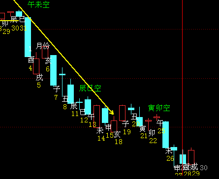
12-13日兄弟旺，跌。18-19日兄弟日破克，涨。
主帖标题: 下周13-17股票财运？14日股票财运 手摇卦
公历时间：2020年1月14日8时7分
干 支：己亥年 丁丑月 丙辰日 壬辰时
旬 空：辰巳 申酉 子丑 午未
离宫：火水未济
六神 伏 神 【本 卦】
青龙 ▄▄▄▄▄ 兄弟己巳火 应
玄武 ▄▄ ▄▄ 子孙己未土
白虎 ▄▄▄▄▄ 妻财己酉金
螣蛇 官鬼己亥水 ▄▄ ▄▄ 兄弟戊午火 世
勾陈 ▄▄▄▄▄ 子孙戊辰土
朱雀 ▄▄ ▄▄ 父母戊寅木
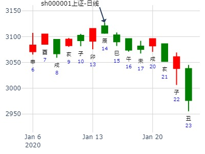
1月6日上证，未济静卦。.md
时间: 2022-01-05 18时28分
干支: 辛丑年辛丑月戊午日 (旬空: 子丑 )
未济静卦
朱雀 ▅▅▅▅▅ 兄弟巳火 应
青龙 ▅▅ ▅▅ 子孙未土
玄武 ▅▅▅▅▅ 妻财酉金
白虎 官鬼亥水▅▅ ▅▅ 兄弟午火 世
腾蛇 ▅▅▅▅▅ 子孙辰土
勾陈 ▅▅ ▅▅ 父母寅木
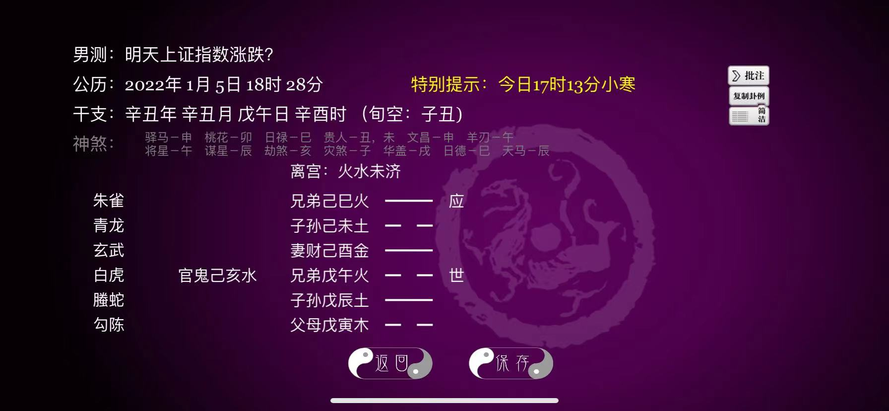
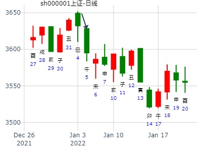
经典卦例： 旅之遁，大涨。
出生年：11.48年 性别：男 占事: 测000708大冶特钢壬辰年走势？ 2.28
起卦方式：手动摇卦 周易天地www.dawn8888.live六爻线上排盘系统
公历时间：2012年2月28日7时32分
干支：壬辰年 壬寅月 己未日 戊辰时
旬空：午未 辰巳 子丑 戌亥
离宫：火水未济
六神 伏 神 【本 卦】
勾陈 ▄▄▄▄▄ 兄弟己巳火 应
朱雀 ▄▄ ▄▄ 子孙己未土
青龙 ▄▄▄▄▄ 妻财己酉金
玄武 官鬼己亥水 ▄▄ ▄▄ 兄弟戊午火 世
白虎 ▄▄▄▄▄ 子孙戊辰土
螣蛇 ▄▄ ▄▄ 父母戊寅木
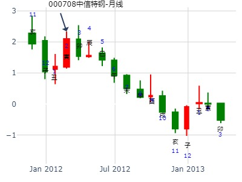
本帖最后由 KMDBC 于 2013-2-19 22:23 编辑
占事：002009今天走势
起卦方式：手工指定 易经股市论坛 www.yijingstock.com 在线排盘系统
公历时间：2013年2月19日8时21分
干 支：癸巳年 甲寅月 丙辰日 壬辰时 (子丑)
离宫：火水未济
六神 伏 神 【本 卦】
青龙 ▄▄▄▄▄ 兄弟己巳火 应
玄武 ▄▄ ▄▄ 子孙己未土
白虎 ▄▄▄▄▄ 妻财己酉金
螣蛇 官鬼己亥水 ▄▄ ▄▄ 兄弟戊午火 世
勾陈 ▄▄▄▄▄ 子孙戊辰土
朱雀 ▄▄ ▄▄ 父母戊寅木
试断：子孙辰土逢日辰生才酉金，收小阳
今天断错，收中阴 |
主帖标题: 2022年第6周2月7至2月11日个股300491和600031预测汇总
2022年第6周2月7至2月11日个股300491预测
公历时间：2022年2月6日10时1分 农历时间：壬寅年 正月初六日巳时
干 支：壬寅年 壬寅月 庚寅日 辛巳时
旬 空：辰巳 辰巳 午未 申酉
神 煞：驿马─申 桃花─卯 日禄─申 贵人─丑，未
中国预测网纳甲六爻排盘
离宫：火水未济
六神 伏 神 【本 卦】
螣蛇 ▄▄▄▄▄ 兄弟己巳火 应
勾陈 ▄▄ ▄▄ 子孙己未土
朱雀 ▄▄▄▄▄ 妻财己酉金
青龙 官鬼己亥水 ▄▄ ▄▄ 兄弟戊午火 世
玄武 ▄▄▄▄▄ 子孙戊辰土
白虎 ▄▄ ▄▄ 父母戊寅木
周涨，一二三四涨，五跌，，，，，涨，涨，涨，涨，跌，，，，周涨
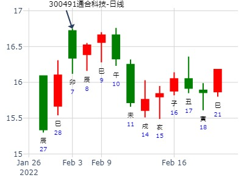
主帖标题: 第二次应irak之请占300033下周涨跌
公历时间：2022年2月12日9时39分 农历时间：壬寅年 正月十二日巳时
干 支：壬寅年 壬寅月 丙申日 癸巳时
旬 空：辰巳 辰巳 辰巳 午未
神 煞：驿马─寅 桃花─酉 日禄─巳 贵人─酉，亥
离宫：火水未济
六神 伏 神 【本 卦】
青龙 ▄▄▄▄▄ 兄弟己巳火 应
玄武 ▄▄ ▄▄ 子孙己未土
白虎 ▄▄▄▄▄ 妻财己酉金
螣蛇 官鬼己亥水 ▄▄ ▄▄ 兄弟戊午火 世
勾陈 ▄▄▄▄▄ 子孙戊辰土
朱雀 ▄▄ ▄▄ 父母戊寅木
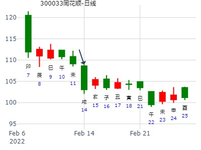
明天19日上证指数涨跌-牛教授
时间: 2025-02-18 16时19分
干支: 乙巳年戊寅月戊午日 (旬空: 子丑 )
未济静卦
朱雀 ▅▅▅▅▅ 兄弟巳火 应
青龙 ▅▅ ▅▅ 子孙未土
玄武 ▅▅▅▅▅ 妻财酉金
白虎 官鬼亥水▅▅ ▅▅ 兄弟午火 世
腾蛇 ▅▅▅▅▅ 子孙辰土
勾陈 ▅▅ ▅▅ 父母寅木
科大讯飞17.3.9-18.3.8 风生水起
科大讯飞丁酉年卦：辰月看涨。 火水未济静卦。酉财。.md
时间: 2017-03-09 9时10分
干支: 丁酉年癸卯月乙未日 (旬空: 辰巳 )
未济静卦
玄武 ▅▅▅▅▅ 兄弟巳火 应
白虎 ▅▅ ▅▅ 子孙未土
腾蛇 ▅▅▅▅▅ 妻财酉金
勾陈 官鬼亥水▅▅ ▅▅ 兄弟午火 世
朱雀 ▅▅▅▅▅ 子孙辰土
青龙 ▅▅ ▅▅ 父母寅木
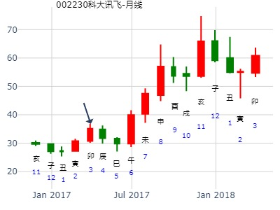
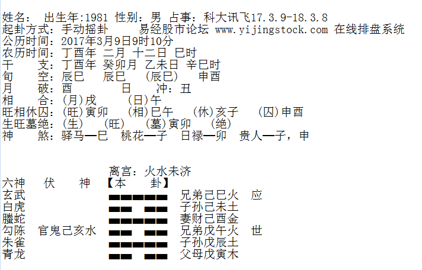
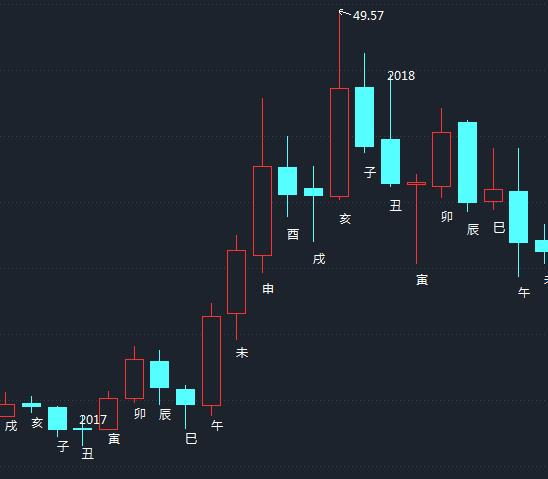
中航飞机 未来 2周 。 风生水起。
公历时间：2017年4月11日15时0分
干 支：丁酉年 甲辰月 戊辰日 庚申时
旬 空：辰巳 寅卯 (戌亥) 子丑
离宫：火水未济
六神 伏 神 【本 卦】
朱雀 ▄▄▄▄▄ 兄弟己巳火 应
青龙 ▄▄ ▄▄ 子孙己未土
玄武 ▄▄▄▄▄ 妻财己酉金
白虎 官鬼己亥水 ▄▄ ▄▄ 兄弟戊午火 世
螣蛇 ▄▄▄▄▄ 子孙戊辰土
勾陈 ▄▄ ▄▄ 父母戊寅木
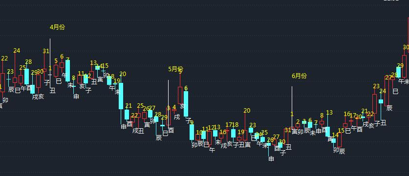
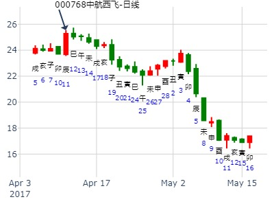
九阳股份最近半年的涨跌横走势？硬币卦212121-王
时间: 2021-04-19 12时01分
干支: 辛丑年壬辰月丁酉日 (旬空: 辰巳 )
未济静卦
青龙 ▅▅▅▅▅ 兄弟巳火 应
玄武 ▅▅ ▅▅ 子孙未土
白虎 ▅▅▅▅▅ 妻财酉金
腾蛇 官鬼亥水▅▅ ▅▅ 兄弟午火 世
勾陈 ▅▅▅▅▅ 子孙辰土
朱雀 ▅▅ ▅▅ 父母寅木
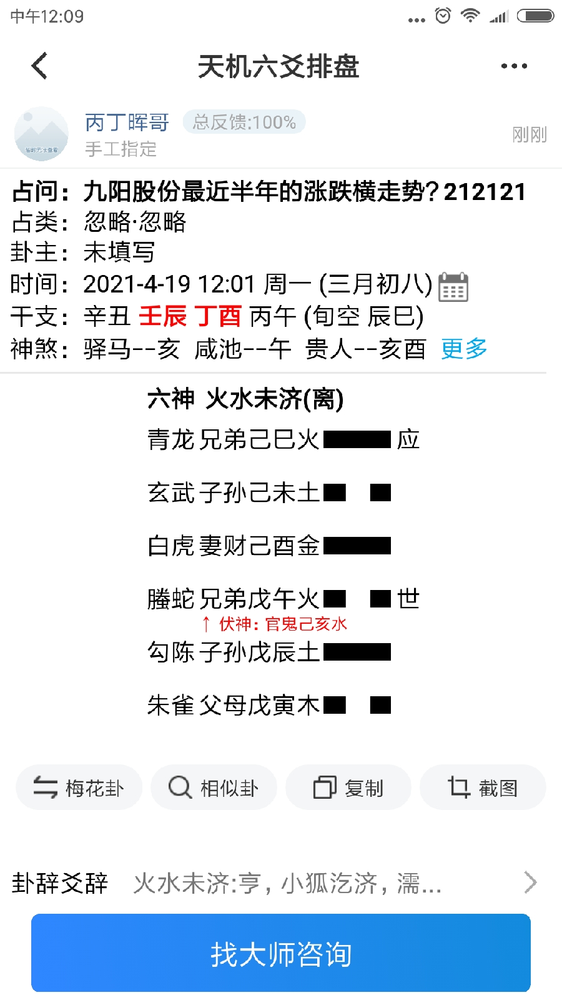
预计午月中下旬开涨。未申月看涨。
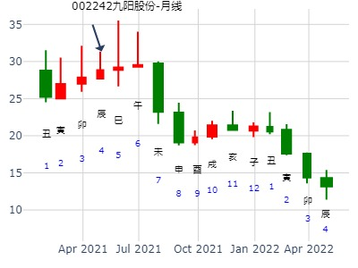
上证指数辰巳月走势
上证到午月末
公历起卦时间：2022年4月20日7时45分 (在线摇卦)
干支：壬寅年 甲辰月 癸卯日 丙辰时 （日空：辰巳）
神煞：驿马－巳 桃花－子 日禄－子 贵人－卯，巳
离宫：火水未济 离宫：火水未济
六神 伏神 本 卦 变 卦
白虎 兄弟己巳火 ▅▅▅▅▅ 应 兄弟己巳火 ▅▅▅▅▅ 应
螣蛇 子孙己未土 ▅▅ ▅▅ 子孙己未土 ▅▅ ▅▅
勾陈 妻财己酉金 ▅▅▅▅▅ 妻财己酉金 ▅▅▅▅▅
朱雀 官鬼己亥水 兄弟戊午火 ▅▅ ▅▅ 世 兄弟戊午火 ▅▅ ▅▅ 世
青龙 子孙戊辰土 ▅▅▅▅▅ 子孙戊辰土 ▅▅▅▅▅
玄武 父母戊寅木 ▅▅ ▅▅ 父母戊寅木 ▅▅ ▅▅
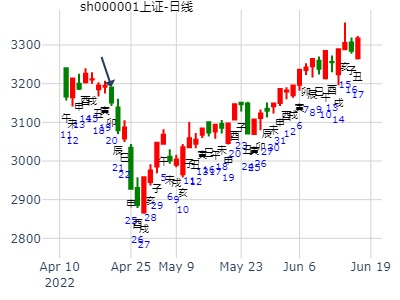
600556慧球科技明天涨跌？
占事：600556涨跌
排卦：元亨利贞网六爻在线排盘系统 http://www.china95.net
公历起卦时间：2015年5月21日17时44分 (在线摇卦)
干支：乙未年 辛巳月 丁酉日 己酉时 （日空：辰巳）
离宫：火水未济 离宫：火水未济
六神 伏神 本 卦 变 卦
青龙 兄弟己巳火 ▅▅▅▅▅ 应 兄弟己巳火 ▅▅▅▅▅ 应
玄武 子孙己未土 ▅▅ ▅▅ 子孙己未土 ▅▅ ▅▅
白虎 妻财己酉金 ▅▅▅▅▅ 妻财己酉金 ▅▅▅▅▅
腾蛇 官鬼己亥水 兄弟戊午火 ▅▅ ▅▅ 世 兄弟戊午火 ▅▅ ▅▅ 世
勾陈 子孙戊辰土 ▅▅▅▅▅ 子孙戊辰土 ▅▅▅▅▅
朱雀 父母戊寅木 ▅▅ ▅▅ 父母戊寅木 ▅▅ ▅▅
今天卖早了，主力真够坏的，尾盘10分钟才拉升。等了一天，刚卖了就拉升。不知明天还涨吗？此股够磨人的。估计明天应该有个中阳吧。高手给看看

5.12是涨？跌？幅度如何？（1）
上证指数：5.12
干支：辛丑年 癸巳月 己未日 乙亥时 （日空：子丑）
神煞：驿马－巳 桃花－子 日禄－午 贵人－子，申
离宫：火水未济 离宫：火水未济
六神 伏神 本 卦 变 卦
勾陈 兄弟己巳火 ▅▅▅▅▅ 应 兄弟己巳火 ▅▅▅▅▅ 应
朱雀 子孙己未土 ▅▅ ▅▅ 子孙己未土 ▅▅ ▅▅
青龙 妻财己酉金 ▅▅▅▅▅ 妻财己酉金 ▅▅▅▅▅
玄武 官鬼己亥水 兄弟戊午火 ▅▅ ▅▅ 世 兄弟戊午火 ▅▅ ▅▅ 世
白虎 子孙戊辰土 ▅▅▅▅▅ 子孙戊辰土 ▅▅▅▅▅
螣蛇 父母戊寅木 ▅▅ ▅▅ 父母戊寅木 ▅▅ ▅▅
收阳，大阳
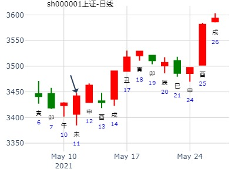
5.14是涨？跌？幅度如何？（3） 5.14上证指数：得火水未济 ，
时间: 2021-05-13
干支: 辛丑年癸巳月辛酉日 (旬空: 子丑 )
离宫：火水未济 离宫：火水未济
六神 伏神 本 卦 变 卦
螣蛇 兄弟己巳火 ▅▅▅▅▅ 应 兄弟己巳火 ▅▅▅▅▅ 应
勾陈 子孙己未土 ▅▅ ▅▅ 子孙己未土 ▅▅ ▅▅
朱雀 妻财己酉金 ▅▅▅▅▅ 妻财己酉金 ▅▅▅▅▅
青龙 官鬼己亥水 兄弟戊午火 ▅▅ ▅▅ 世 兄弟戊午火 ▅▅ ▅▅ 世
玄武 子孙戊辰土 ▅▅▅▅▅ 子孙戊辰土 ▅▅▅▅▅
白虎 父母戊寅木 ▅▅ ▅▅ 父母戊寅木 ▅▅ ▅▅
阳，中阳
600031巳月涨跌
公历时间：2022年5月6日8时47分
干 支：壬寅年 乙巳月 己未日 戊辰时
旬 空：辰巳 寅卯 子丑 戌亥
神 煞：驿马─巳 桃花─子 日禄─午 贵人─子，申
离宫：火水未济
六神 伏 神 【本 卦】
勾陈 ▄▄▄▄▄ 兄弟己巳火 应
朱雀 ▄▄ ▄▄ 子孙己未土
青龙 ▄▄▄▄▄ 妻财己酉金
玄武 官鬼己亥水 ▄▄ ▄▄ 兄弟戊午火 世
白虎 ▄▄▄▄▄ 子孙戊辰土
螣蛇 ▄▄ ▄▄ 父母戊寅木
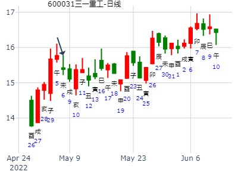
六月星期一到星期五摇卦预测大盘方向
公历时间：2009年6月24日22时19分 星期三
农历时间：己丑年闰五月初二亥时
干支：己丑年 庚午月 庚子日 丁亥时 (旬空：辰巳)
神煞：驿马—寅 桃花—酉 日禄—申 贵人—寅，午
离宫：火水未济
六神 伏 神 【本 卦】
螣蛇 ▅▅▅▅▅ 兄弟己巳火 应
勾陈 ▅▅ ▅▅ 子孙己未土
朱雀 ▅▅▅▅▅ 妻财己酉金
青龙 官鬼己亥水 ▅▅ ▅▅ 兄弟戊午火 世
玄武 ▅▅▅▅▅ 子孙戊辰土
白虎 ▅▅ ▅▅ 父母戊寅木
世临丑日泄气,合子孙化土,日冲财,高位震荡,小阳收盘.属于个人观点!

6月18-21日大盘涨跌卦
时间: 2012-06-15
干支: 壬辰年丙午月丁未日 (旬空: 寅卯 )
未济静卦
青龙 ▅▅▅▅▅ 兄弟巳火 应
玄武 ▅▅ ▅▅ 子孙未土
白虎 ▅▅▅▅▅ 妻财酉金
腾蛇 ▅▅ ▅▅ 兄弟午火 世
勾陈 ▅▅▅▅▅ 子孙辰土
朱雀 ▅▅ ▅▅ 父母寅木

占事：6.9-6.13 大盘
公历时间：2014年6月7日13时28分
干 支：甲午年 庚午月 己酉日 辛未时
旬 空：辰巳 戌亥 (寅卯) 戌亥
离宫：火水未济
六神 伏 神 【本 卦】
勾陈 ▄▄▄▄▄ 兄弟己巳火 应
朱雀 ▄▄ ▄▄ 子孙己未土
青龙 ▄▄▄▄▄ 妻财己酉金
玄武 官鬼己亥水 ▄▄ ▄▄ 兄弟戊午火 世
白虎 ▄▄▄▄▄ 子孙戊辰土
螣蛇 ▄▄ ▄▄ 父母戊寅木
周线 阴线 --实际大涨。
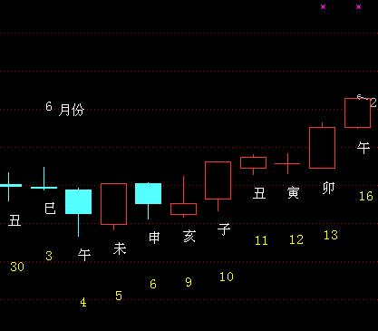
我刚在元亨上找你的周卦。这个卦如何解释涨》
大道至简 2014-6-19 16:22:28
兄弟持世，且旺于月，却是天天涨。无语啊，没法研究下去了
九戒 2014-6-19 16:22:34
这个 官鬼伏藏世下 涨的多
九戒 2014-6-19 16:23:03
官鬼伏藏世下 以前我看 文章这样总结
九戒 2014-6-19 16:23:21
官鬼伏藏兄弟世下
九戒 2014-6-19 16:24:15
官鬼伏藏兄弟世下
是兄弟持世 的特殊案例
大道至简 2014-6-19 16:24:25
噢。值得研究
九戒 2014-6-19 16:24:30
亥 涨的原因
7月1日涨停的股票！！！
出生：没填 年 性别：男 占事：600696匹凸匹明天涨跌
排卦：元亨利贞网六爻在线排盘系统 http://www.china95.net
公历起卦时间：2016年6月30日15时41分 (电脑自动)
干支：丙申年 甲午月 癸未日 庚申时 （日空：申酉）
神煞：驿马－巳 桃花－子 日禄－子 贵人－卯，巳
离宫：火水未济 离宫：火水未济
六神 伏神 本 卦 变 卦
白虎 兄弟己巳火 ▅▅▅▅▅ 应 兄弟己巳火 ▅▅▅▅▅ 应
腾蛇 子孙己未土 ▅▅ ▅▅ 子孙己未土 ▅▅ ▅▅
勾陈 妻财己酉金 ▅▅▅▅▅ 妻财己酉金 ▅▅▅▅▅
朱雀 官鬼己亥水 兄弟戊午火 ▅▅ ▅▅ 世 兄弟戊午火 ▅▅ ▅▅ 世
青龙 子孙戊辰土 ▅▅▅▅▅ 子孙戊辰土 ▅▅▅▅▅
玄武 父母戊寅木 ▅▅ ▅▅ 父母戊寅木 ▅▅ ▅▅
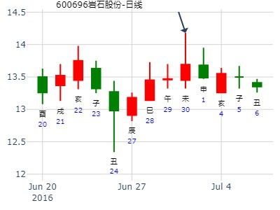
王问上海贝岭8月前两周走势。火水未济静卦。
公历：2022年7月28日11时30分，星期四。 电脑摇卦(起卦方式)
干支：壬寅年 丁未月 壬午日 丙午时 (卦身：寅)
主变卦 火水未济(离宫) [空亡:申、酉]
白虎 ▅▅▅▅▅ 兄弟己巳火 应
螣蛇 ▅▅ ▅▅ 子孙己未土
勾陈 ▅▅▅▅▅ 妻财己酉金
朱雀 官鬼己亥水 ▅▅ ▅▅ 兄弟戊午火 世
青龙 ▅▅▅▅▅ 子孙戊辰土
玄武 ▅▅ ▅▅ 父母戊寅木
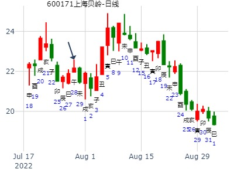
第七期9月1日到5日预测上证指数比赛
公历时间：2008年8月30日15时6分 星期六
干支：戊子年 庚申月 壬寅日 戊申时 (旬空：辰巳)
离宫：火水未济
六神 伏 神 【本 卦】
白虎 ▅▅▅▅▅ 兄弟己巳火 应
螣蛇 ▅▅ ▅▅ 子孙己未土
勾陈 ▅▅▅▅▅ 妻财己酉金
朱雀 官鬼己亥水 ▅▅ ▅▅ 兄弟戊午火 世
青龙 ▅▅▅▅▅ 子孙戊辰土
玄武 ▅▅ ▅▅ 父母戊寅木
这是摇卦的信息!

出生：没填 年 性别：男 占事：000554泰山石油近期涨跌
排卦：元亨利贞网六爻在线排盘系统 http://www.china95.net
公历起卦时间：2014年8月25日11时2分 (电脑自动)
干支：甲午年 壬申月 戊辰日 戊午时 （日空：戌亥）
神煞：驿马－寅 桃花－酉 日禄－巳 贵人－丑，未
离宫：火水未济 离宫：火水未济
六神 伏神 本 卦 变 卦
朱雀 兄弟己巳火 ▅▅▅▅▅ 应 兄弟己巳火 ▅▅▅▅▅ 应
青龙 子孙己未土 ▅▅ ▅▅ 子孙己未土 ▅▅ ▅▅
玄武 妻财己酉金 ▅▅▅▅▅ 妻财己酉金 ▅▅▅▅▅
白虎 官鬼己亥水 兄弟戊午火 ▅▅ ▅▅ 世 兄弟戊午火 ▅▅ ▅▅ 世
腾蛇 子孙戊辰土 ▅▅▅▅▅ 子孙戊辰土 ▅▅▅▅▅
勾陈 父母戊寅木 ▅▅ ▅▅ 父母戊寅木 ▅▅ ▅▅
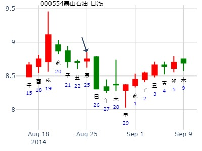
9月6-10日大盘涨跌卦
占事：9月6-10日大盘涨跌？
公历时间：2010年9月3日15时56分 星期五
农历时间：庚寅年七月廿五申时
干支：庚寅年 甲申月 丙辰日 丙申时 (旬空：子丑)
神煞：驿马—寅 桃花—酉 日禄—巳 贵人—酉，亥
离宫：火水未济
六神 伏 神 【本 卦】
青龙 ▅▅▅▅▅ 兄弟己巳火 应
玄武 ▅▅ ▅▅ 子孙己未土
白虎 ▅▅▅▅▅ 妻财己酉金
螣蛇 官鬼己亥水 ▅▅ ▅▅ 兄弟戊午火 世
勾陈 ▅▅▅▅▅ 子孙戊辰土
朱雀 ▅▅ ▅▅ 父母戊寅木
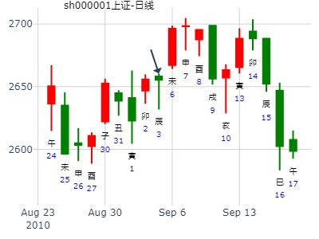
接下来几个月股市一直跌还是反弹见底？
火水未济静卦，财得月，仍一路跌
时间: 2018-09-12 13时19分
干支: 戊戌年辛酉月丁未日 (旬空: 寅卯 )
未济静卦
青龙 ▅▅▅▅▅ 兄弟巳火 应
玄武 ▅▅ ▅▅ 子孙未土
白虎 ▅▅▅▅▅ 妻财酉金
腾蛇 官鬼亥水▅▅ ▅▅ 兄弟午火 世
勾陈 ▅▅▅▅▅ 子孙辰土
朱雀 ▅▅ ▅▅ 父母寅木
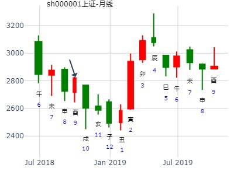
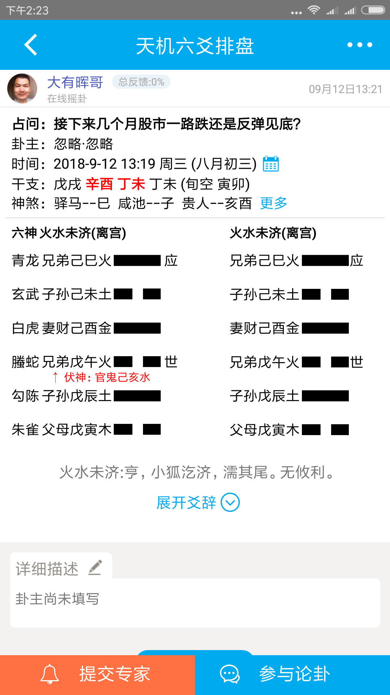
戌月下半月走势 。 兄弟入月墓则能涨。
起卦方式：手工指定 易经股市论坛 www.yijingstock.com 在线排盘系统
公历时间：2015年10月27日22时8分
干 支：乙未年 丙戌月 丙子日 己亥时
旬 空：辰巳 午未 (申酉) 辰巳
离宫：火水未济
六神 伏 神 【本 卦】
青龙 ▄▄▄▄▄ 兄弟己巳火 应
玄武 ▄▄ ▄▄ 子孙己未土
白虎 ▄▄▄▄▄ 妻财己酉金
螣蛇 官鬼己亥水 ▄▄ ▄▄ 兄弟戊午火 世
勾陈 ▄▄▄▄▄ 子孙戊辰土
朱雀 ▄▄ ▄▄ 父母戊寅木
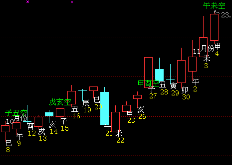
000930未来二周
时间: 2021-10-12 8时53分
干支: 辛丑年戊戌月癸巳日 (旬空: 午未 )
未济静卦
白虎 ▅▅▅▅▅ 兄弟巳火 应
腾蛇 ▅▅ ▅▅ 子孙未土
勾陈 ▅▅▅▅▅ 妻财酉金
朱雀 官鬼亥水▅▅ ▅▅ 兄弟午火 世
青龙 ▅▅▅▅▅ 子孙辰土
玄武 ▅▅ ▅▅ 父母寅木
兄弟入月墓，亥子丑卯均要涨。子日兄弟世爻日破，涨停。丑日五爻静爻逢冲，
摇卦日癸日，次日即午未出空，子日世爻是否论旬空被冲日破，还是冲实？ 还是按实际辰巳旬空，午爻被冲破。
卯日本该冲酉金财爻暗动，居然没涨。
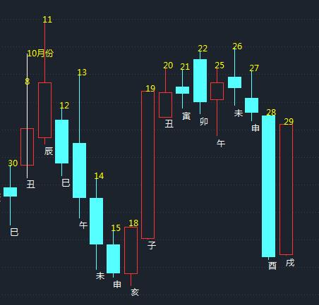
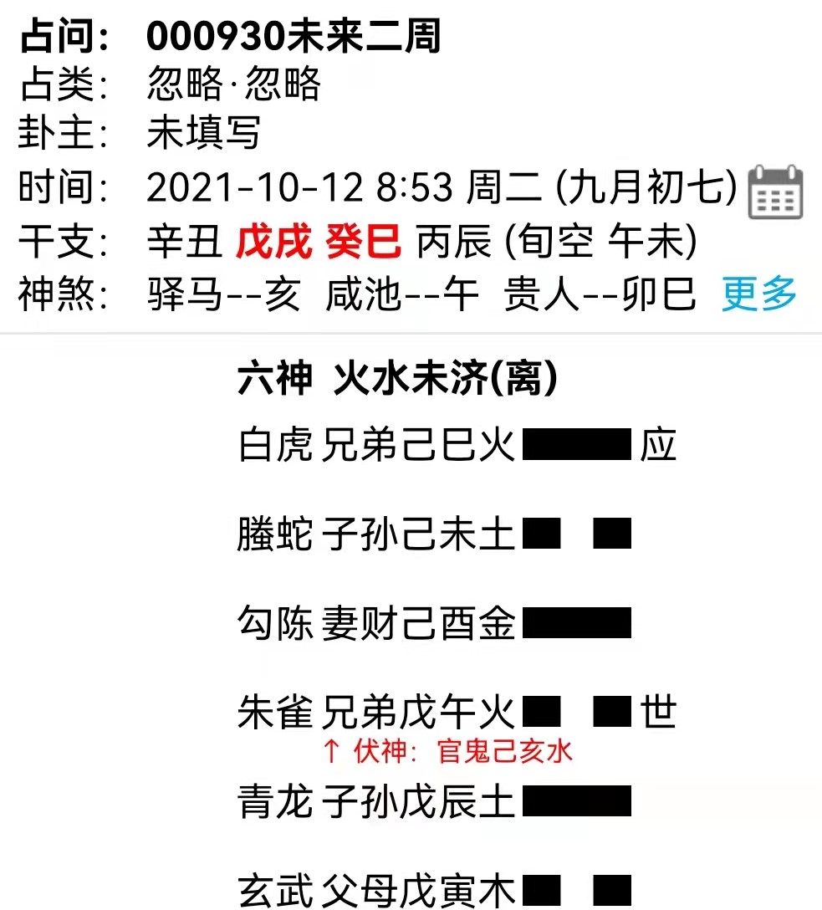
10月第一周卦。未济静卦。 永启 测。
上证10月10日-14日行情。
时间: 2022-10-01 8时44分
干支: 壬寅年己酉月丁亥日 (旬空: 午未 )
未济静卦
青龙 ▅▅▅▅▅ 兄弟巳火 应
玄武 ▅▅ ▅▅ 子孙未土
白虎 ▅▅▅▅▅ 妻财酉金
腾蛇 官鬼亥水▅▅ ▅▅ 兄弟午火 世
勾陈 ▅▅▅▅▅ 子孙辰土
朱雀 ▅▅ ▅▅ 父母寅木
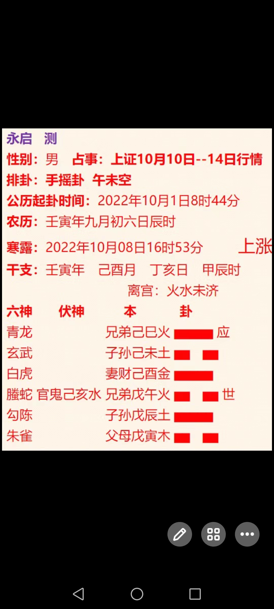
兄弟持世，酉日不一定涨。兄弟戌日入墓才是重点。
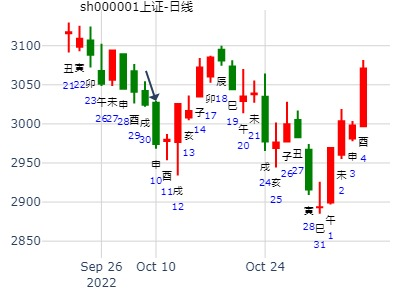
主帖标题: 周三个股
主题：医药
壬寅年庚戌月丁酉日庚戌时(辰巳空) 壬寅年八月十九(2022/10/11 20:31)
火水未济
青龙 兄弟巳火 ／ 应
玄武 子孙未土 ∥
白虎 妻财酉金 ／
官鬼亥水：腾蛇 兄弟午火 ∥ 世
勾陈 子孙辰土 ／
朱雀 父母寅木 ∥
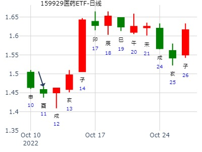
赵哲研判000919下周走势如何？
时间: 2000-11-09
干支: 庚辰年丁亥月辛未日 (旬空: 戌亥 )
未济静卦
腾蛇 ▅▅▅▅▅ 兄弟巳火 应
勾陈 ▅▅ ▅▅ 子孙未土
朱雀 ▅▅▅▅▅ 妻财酉金
青龙 官鬼亥水▅▅ ▅▅ 兄弟午火 世
玄武 ▅▅▅▅▅ 子孙辰土
白虎 ▅▅ ▅▅ 父母寅木
分析：
1。酉金于月弱，下周空而下跌。
2。股价出空之日大涨。酉日行情结束。
马后炮：
1。丑日冲未，弱则冲破。原神受伤。跌。
2。未日合补破未，又涨。
3。此卦流日旬空跟着变。
4。戌日莫非容易害金。金爻妻财在戌日容易跌？
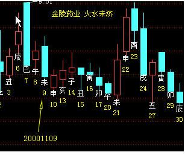
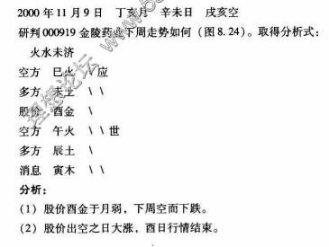
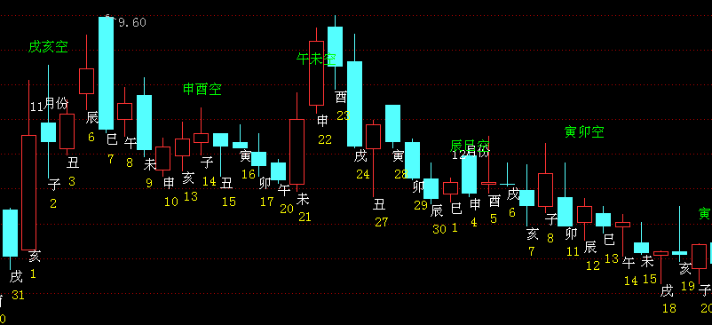
宁波银行[002142]何时得财？
公历起卦时间：2007年11月6日10时6分 (手工指定)农历：丁亥年九月廿七日巳时寒露：2007年10月09日00时37分立冬：2007年11月08日03时32分
干支：丁亥年 庚戌月 甲辰日 己巳时 （日空：寅卯）
神煞：驿马－寅 桃花－酉 日禄－寅 贵人－丑，未
离宫：火水未济
六神 伏神 本 卦
玄武 兄弟己巳火 ▅▅▅▅▅ 应
白虎 子孙己未土 ▅▅ ▅▅
腾蛇 妻财己酉金 ▅▅▅▅▅
勾陈 官鬼己亥水 兄弟戊午火 ▅▅ ▅▅ 世
朱雀 子孙戊辰土 ▅▅▅▅▅
青龙 父母戊寅木 ▅▅ ▅▅
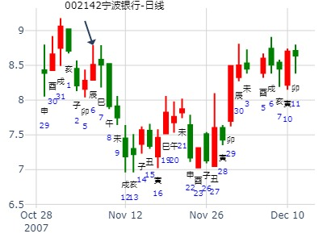
主帖标题: 000516开元控股28日涨跌
600031巳月涨跌
公历时间：2022年5月6日8时47分
干 支：壬寅年 乙巳月 己未日 戊辰时
旬 空：辰巳 寅卯 子丑 戌亥
离宫：火水未济
六神 伏 神 【本 卦】
勾陈 ▄▄▄▄▄ 兄弟己巳火 应
朱雀 ▄▄ ▄▄ 子孙己未土
青龙 ▄▄▄▄▄ 妻财己酉金
玄武 官鬼己亥水 ▄▄ ▄▄ 兄弟戊午火 世
白虎 ▄▄▄▄▄ 子孙戊辰土
螣蛇 ▄▄ ▄▄ 父母戊寅木
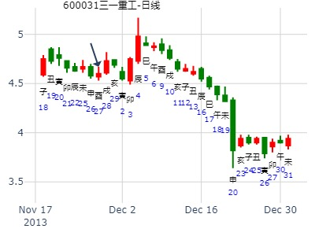
出生：没填 年 性别：男 占事：000021长城开发明天涨跌
排卦：元亨利贞网六爻在线排盘系统 http://www.china95.net
公历起卦时间：2014年11月3日16时58分 (电脑自动)
干支：甲午年 甲戌月 戊寅日 庚申时 （日空：申酉）
未济静卦
朱雀 ▅▅▅▅▅ 兄弟巳火 应
青龙 ▅▅ ▅▅ 子孙未土
玄武 ▅▅▅▅▅ 妻财酉金
白虎 官鬼亥水▅▅ ▅▅ 兄弟午火 世
腾蛇 ▅▅▅▅▅ 子孙辰土
勾陈 ▅▅ ▅▅ 父母寅木

生：没填 年 性别：男 占事：002767先锋电子下周涨跌
排卦：元亨利贞网六爻在线排盘系统 http://www.china95.net
公历起卦时间：2015年11月13日17时7分 (电脑自动)
干支：乙未年 丁亥月 癸巳日 辛酉时 （日空：午未）
未济静卦
白虎 ▅▅▅▅▅ 兄弟巳火 应
腾蛇 ▅▅ ▅▅ 子孙未土
勾陈 ▅▅▅▅▅ 妻财酉金
朱雀 官鬼亥水▅▅ ▅▅ 兄弟午火 世
青龙 ▅▅▅▅▅ 子孙辰土
玄武 ▅▅ ▅▅ 父母寅木
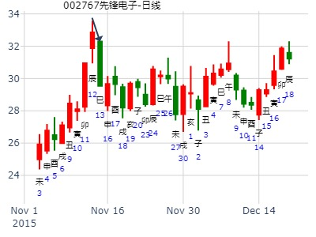
主帖标题: 美尚生态22日走势？
出生年:1981 性别：男 占事：起卦方式：手动摇卦中国预测网六爻排盘
公历时间：2019年11月22日9时5分
干 支：己亥年 乙亥月 癸亥日 丁巳时
旬 空：辰巳 申酉 子丑 子丑
离宫：火水未济
白虎 ▄▄▄▄▄ 兄弟己巳火 应
螣蛇 ▄▄ ▄▄ 子孙己未土
勾陈 ▄▄▄▄▄ 妻财己酉金
朱雀 官鬼己亥水 ▄▄ ▄▄ 兄弟戊午火 世
青龙 ▄▄▄▄▄ 子孙戊辰土
玄武 ▄▄ ▄▄ 父母戊寅木

主帖标题: 今天想加浙能得利吗？手摇卦
姓名： 出生年:1981 性别：男 占事：起卦方式：手动摇卦中国预测网六爻排盘[url]http://pp.yuceweb.com/6y.asp[/url]
公历时间：2019年11月26日9时46分
干 支：己亥年 乙亥月 丁卯日 乙巳时
旬 空：辰巳 申酉 戌亥 寅卯
神 煞：驿马─巳 桃花─子 日禄─午 贵人─酉，亥
离宫：火水未济
青龙 ▄▄▄▄▄ 兄弟己巳火 应
玄武 ▄▄ ▄▄ 子孙己未土
白虎 ▄▄▄▄▄ 妻财己酉金
螣蛇 官鬼己亥水 ▄▄ ▄▄ 兄弟戊午火 世
勾陈 ▄▄▄▄▄ 子孙戊辰土
朱雀 ▄▄ ▄▄ 父母戊寅木
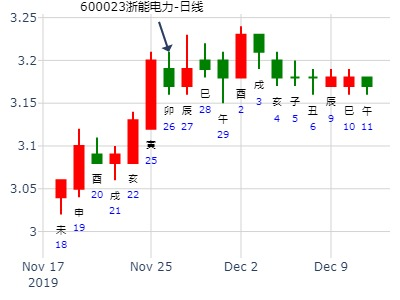
主帖标题: 11.21 寅日沪市大盘
公历起卦时间：2022年11月20日11时22分 (电脑自动)
干支：壬寅年 辛亥月 丁丑日 丙午时 （日空：申酉）
离宫：火水未济
六神 伏神 本 卦
青龙 兄弟己巳火 ▅▅▅▅▅ 应
玄武 子孙己未土 ▅▅ ▅▅
白虎 妻财己酉金 ▅▅▅▅▅
螣蛇 官鬼己亥水 兄弟戊午火 ▅▅ ▅▅ 世
勾陈 子孙戊辰土 ▅▅▅▅▅
朱雀 父母戊寅木 ▅▅ ▅▅
偏空。

试测12.21上证收盘个位数？
出生：2021 年 性别：男 占事：没填
排卦：元亨利贞网六爻在线排盘系统 https://www.china95.net
公历起卦时间：2021年12月20日15时38分 (电脑自动)
干支：辛丑年 庚子月 壬寅日 戊申时 （日空：辰巳）
未济静卦
白虎 ▅▅▅▅▅ 兄弟巳火 应
腾蛇 ▅▅ ▅▅ 子孙未土
勾陈 ▅▅▅▅▅ 妻财酉金
朱雀 官鬼亥水▅▅ ▅▅ 兄弟午火 世
青龙 ▅▅▅▅▅ 子孙辰土
玄武 ▅▅ ▅▅ 父母寅木